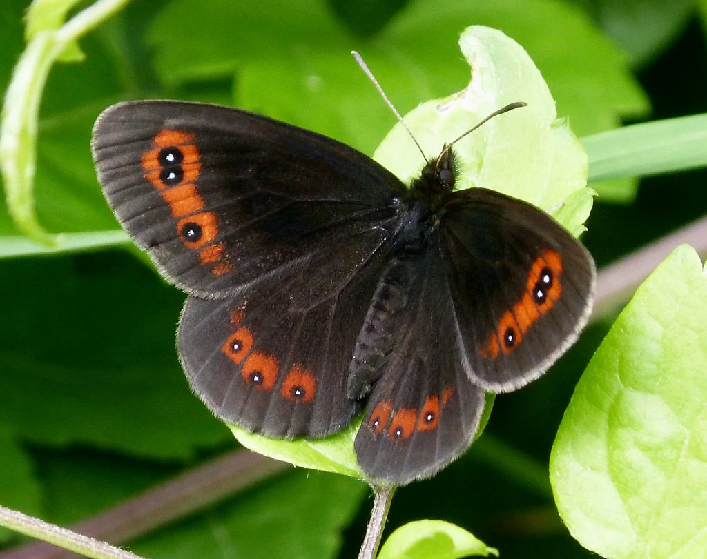

Vertebrate Genomes Project
Kākāpō
The Rockefeller University featured this kākāpō in its coverage of the Vertebrate Genomes Project, an initiative of Genome 10K.
Photograph · Chris Birmingham · CC BY 2.0
Homepage photographs are displayed with responsive crops. Credits and source licences are listed below.
Vertebrate Genomes Project
The Rockefeller University featured this kākāpō in its coverage of the Vertebrate Genomes Project, an initiative of Genome 10K.
Photograph · Chris Birmingham · CC BY 2.0

Darwin Tree of Life
The Darwin Tree of Life project featured this photograph of Erebia aethiops in its account of butterfly sequencing in the Scottish Borders.
Photograph · Gail Hampshire · CC BY 2.0

VGP / GenomeArk
GenomeArk uses this photograph on the green sea turtle (Chelonia mydas) genome page.
Photograph · Christoph Schuetzenhofer · CC BY-SA 3.0